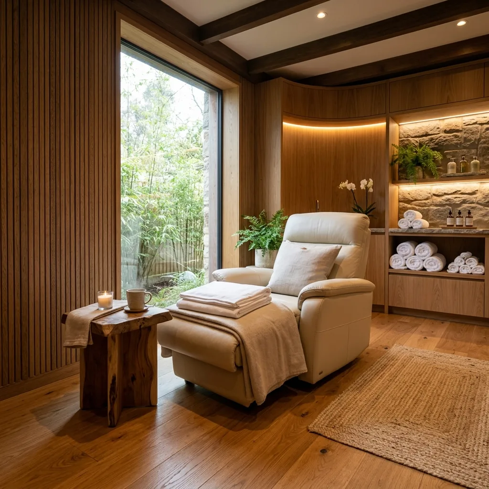
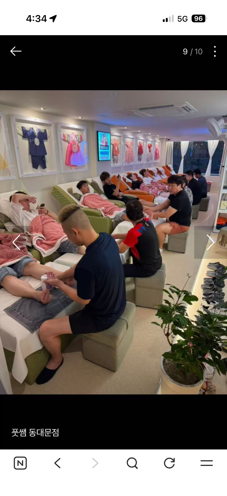
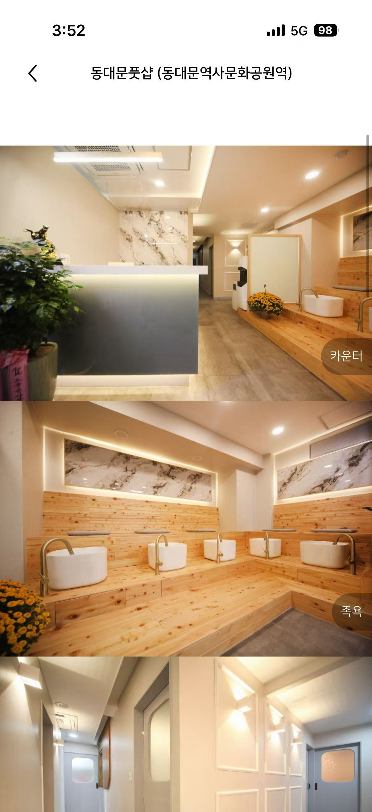
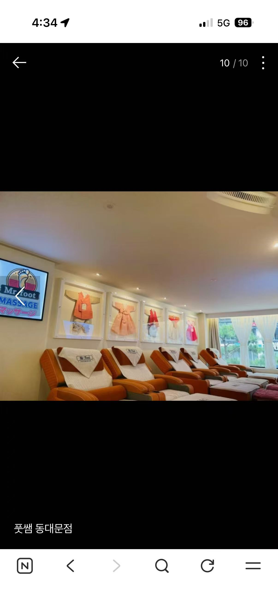
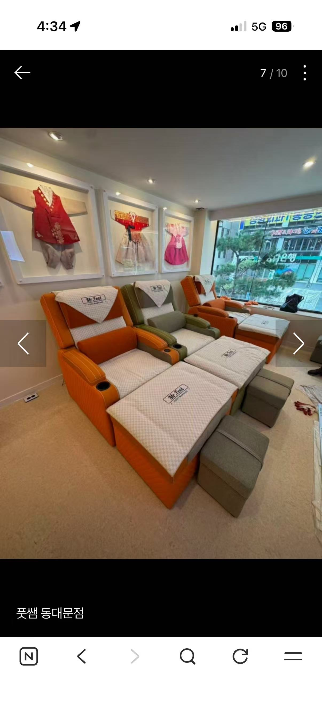
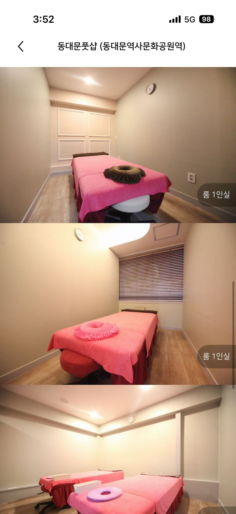
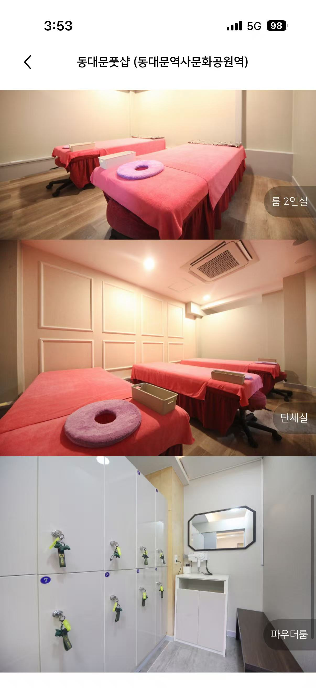
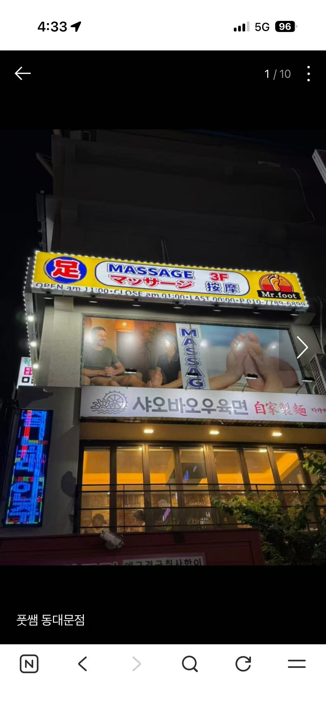

을지로 3층에 마련된아늑한 쉼터
풋쌤 동대문점은 바쁜 일상 속에서 잠시 쉬어갈 수 있는 테라피 공간입니다. 따뜻한 원목 인테리어와 간접 조명 속에서 발·전신·아로마 프로그램을 제공합니다. 원하는 관리 부위와 머무를 시간을 먼저 살펴보고 예약 문의 시 이용 조건을 확인해 주세요.
전문 자격 테라피스트 직접 관리
매일 철저한 위생 및 소독 관리
아늑한 1인실 및 커플/단체실 완비


풋쌤 동대문점은 바쁜 일상 속에서 잠시 쉬어갈 수 있는 테라피 공간입니다. 따뜻한 원목 인테리어와 간접 조명 속에서 발·전신·아로마 프로그램을 제공합니다. 원하는 관리 부위와 머무를 시간을 먼저 살펴보고 예약 문의 시 이용 조건을 확인해 주세요.
관리를 시작하기 전, 따뜻한 물에 발을 담그고 차 한 잔과 함께 긴장을 푸는 웰컴 공간입니다. 친환경 편백나무로 제작되어 은은한 나무 향이 퍼지며, 은은한 간접 조명이 일상의 소음을 잊게 해줍니다.

편안하게 기울어지는 리클라이너 체어에 누워 집중 관리를 받는 메인 라운지입니다. 벽면에는 단아한 한국 전통 한복 미니어처 액자들이 걸려 있어 동양적인 미학을 선사하며, 넓은 통창을 통해 도심의 전경을 편안하게 조망할 수 있습니다.


온전히 나만의 시간에 집중할 수 있는 프라이빗한 개인 룸과 연인, 가족, 친구와 함께 이용하기 좋은 2인실 및 단체실이 준비되어 있습니다. 부드러운 패브릭 톤의 정갈한 침대 베드에서 최상의 아로마 및 바디 관리를 경험해 보세요.


족욕을 포함해 발을 중심으로 관리하는 프로그램입니다. 안내된 시간과 요금을 확인하고 원하는 관리 강도나 이용 조건은 예약 문의 시 말씀해 주세요.
목·어깨·허리 등 전신을 중심으로 관리하는 프로그램입니다. 관리받고 싶은 부위와 불편한 점을 먼저 말씀해 주시면 이용 가능한 범위를 확인할 수 있습니다.
아로마 오일을 사용하는 바디 관리 프로그램입니다. 오일 사용에 관한 질문이나 원하는 관리 부위가 있다면 예약 문의 시 함께 알려주세요.
홈에 안내된 프로그램을 먼저 읽고 날짜·시각·인원·희망 프로그램을 전달해 주세요. 안내를 읽은 것과 예약이 확정된 것은 다릅니다.
시그니처 발 마사지는 족욕 포함 40분, 35,000원으로 안내되어 있습니다. 예약할 때 적용되는 시간·구성은 전화로 확인해 주세요.
스포츠 전신 테라피는 60분 60,000원, 스페셜 아로마 테라피는 80분 80,000원입니다. 전신 관리 여부와 오일 사용 등 원하는 조건을 말씀하고 선택하세요.
희망 날짜와 시각, 방문 인원, 원하는 프로그램을 알려주세요. 이용 가능 여부와 최종 안내를 받은 뒤 일정이 확정됐는지 확인하세요. 이 페이지의 전화 버튼은 문의 연결이며 자동 예약·결제를 하지 않습니다.
주소는 서울 중구 을지로 256 3층입니다. 아래 건물 사진과 지도에서 위치를 확인해 주세요. 1인실·2인실·단체실 안내가 있으니 동반 인원과 원하는 공간의 이용 가능 여부는 문의해 주세요.
서울 중구 을지로 256 3층
(동대문역사문화공원역 12번 출구에서 도보 1분)
매일 오전 11:00 ~ 새벽 01:00
(마지막 예약 접수: 밤 12:00)
010-7789-6899
0507-1382-6899

📍 네이버 지도 열기